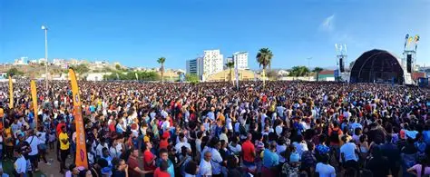

Gamboa Festival
O Gamboa Festival é um dos maiores festivais de música de Cabo Verde, realizado anualmente na praia da Gamboa, em Santiago, na cidade da Praia. É um evento que reúne artistas locais e internacionais em uma celebração vibrante da música cabo-verdiana e mundial.
O festival é uma oportunidade para descobrir novos talentos, reviver grandes clássicos e celebrar a cultura e juventude cabo-verdianas ao som de ritmos como funaná, kizomba, hip hop e muito mais.